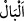
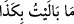
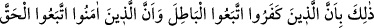
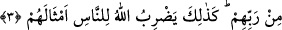

Kur’ân’ın yüce mevkiine tenbih yapılmıştır. Zira her konuda aslolan Kur’an ve Kurân’a
îmandır. İşte bunun için “Rableri tarafından Muhammed’e indirilen gerçeğe” kavliyle
Allah bu hususu teyid etmiştir. Artık kitaplar arasında şu an itibariyle yalnız Kur’an
haktır. Hak, bâtılın mukabilidir.
el-Müfredat’ta Râgıb şöyle demiştir: __WORD__ (bâl), kendisi için hüzün ve keder duyulan
şeydir. Bundan dolayı __WORD__ (mâ bâleytü bikezâ) denilir. Mânası; “ben buna
üzülmedim” demektir. İnsanın duygu ve düşünce olarak bulunduğu hâle de “bâl” tâbir
edilir. Meselâ, “işte bu benim aklıma hiç düşmedi, hiç gelmedi” denilir.
Kamus’ta ise “bâl” kelimesinin “hal” demek olduğu söylenmektedir.
3. Bu, böyledir: Çünkü inkâr edenler bâtıla uymuşlar; inananlar ise Rablerinden
gelen hakka uymuşlardır. İşte Allah, onların durumlarını, insanlara böyle anlatır.
“Bu, böyledir:” İnkâr edenlerin işleri boşa çıkarılır, inanıp iyi işler yapanların da
günahları örtülüp halleri düzeltilir. “Çünkü inkâr edenler bâtıla” şeytana “uymuşlar;”
kendileri inkâr edip başkalarının hidâyetine de engel olmuşlardır. “İnananlar ise
Rablerinden gelen hakka uymuşlardır.” Kendisinden kayıtsız kalınmayacak olan
Allah’a, O’nun kitabına inanmışlar ve güzel işler yapmışlardır. “İşte Allah, onların”
iki gurubun ahvâlini “durumlarını” ve garâbette darb-ı mesel durumunda olan
vasıflarını -ki bu ilklerin bâtıla uyup zarar, ziyan ve hüsran yaşamaları, sonrakilerin ise
hakka uyup kurtuluş ve mutluluğa ulaşmalarıdır- “insanlara böyle anlatır.”
Burada kâfirlerin bâtıla uymalarının amellerinin boşa çıkarılmasına sebep oluşunu
beyân etmek, aynı zamanda bu küfür ve engellemenin müsebbeb oluşunun beyânını da
ihtivâ etmektedir. Çünkü bu bâtıla uyma işi, aynı zamanda küfür ve engellenmenin de
aslı durumundadır. Müminlerin îman ve iyi işlerinin buna sebep oluşunun
bildirilmesinden sonra hakka uymalarının günahlarının örtülmesine ve hallerinin
ıslahına sebep oluşunu beyân etmek ise bu durumun aynı zamanda hakka uymanın bir
sonucu olduğunu da ihtivâ etmektedir. Çünkü bu ittibâ, kesin olarak bunların ana
kaynağıdır. Öyleyse bu hususu iki ayrı yerde arz ve beyân etmekte bir çelişki yoktur.
Hak kelimesi birkaç mânâda söylenir:
1- Hikmet muktezâsınca bir şeyin mûcidine hak denir. Allah Teâlâ hakkında “hak”
denmesi bundan dolayıdır.
2- Hikmet muktezâsınca îcâd edilen şeye de hak denir. Bu mânâda Yüce Allah’ın
bütün işleri haktır. Mesela bizim “ölüm haktır, diriliş haktır” dememiz bu kabildendir.
Bütün varlıklar bu hükme dâhildir. Çünkü hakîm olan Allah Teâlâ’nın fiilinde abes
olmaz. Bazı şeylerin boş ve bâtıl oluşları ise izâfî, nisbî ve görecelidir. Hakîki ve